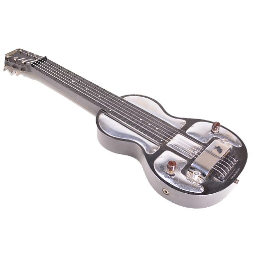
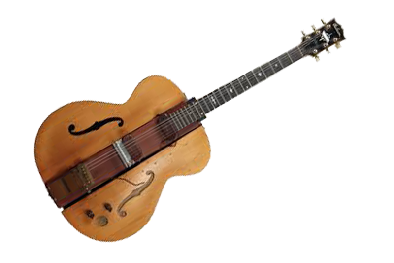
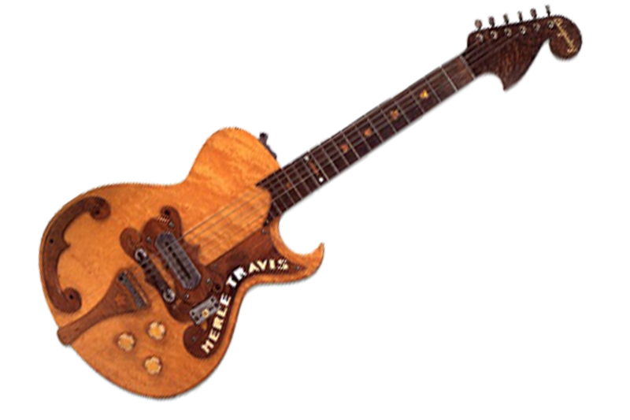
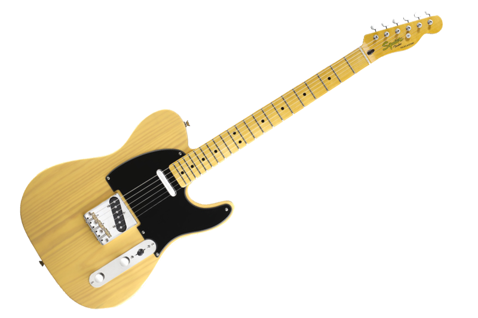
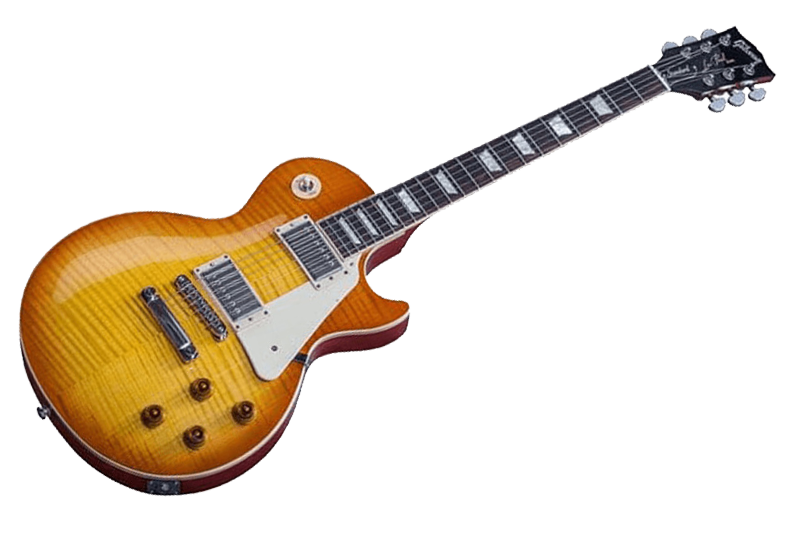
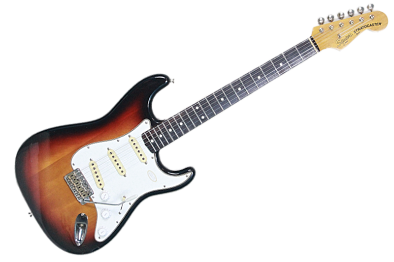
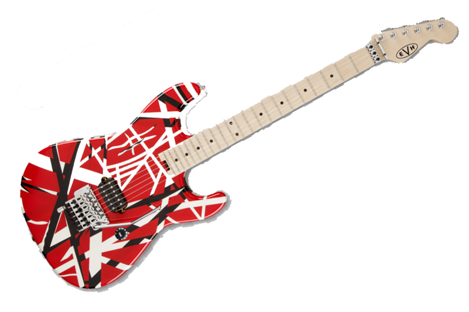
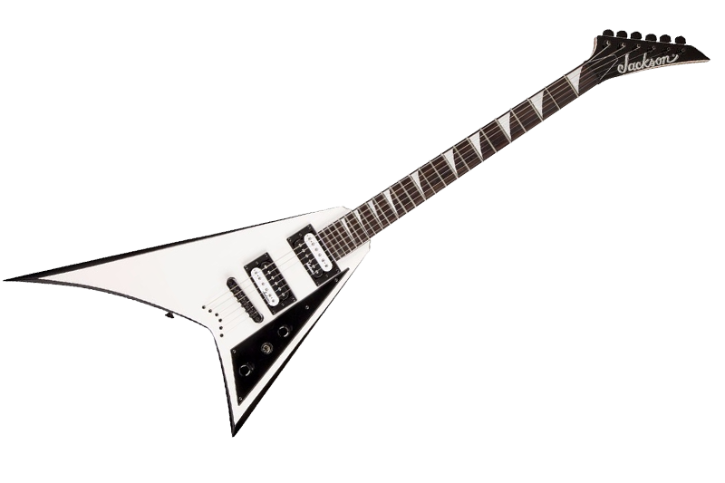
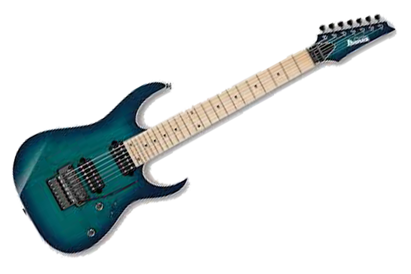
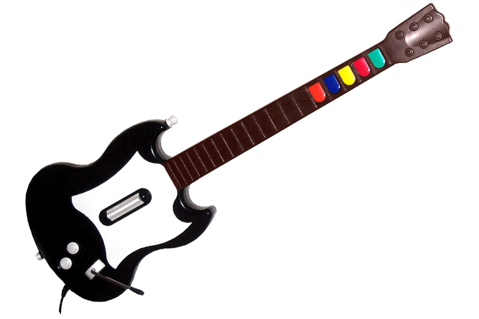

-

Frying Pan
Guitarra elétrica havaiana que ficou conhecida Rickenback "Frying Pan", e considerado a primeira guitarra elétrica.
-

Eletro String
Essa guitarra elétrica era chamada de Guitarra Espanhola Bakelite. Inicialmente era feita de plástico usado em telefones, bolas de bilhar e telefones em meados de 1900. Eletro String era a companhia que criou a guitarra, posteriormente mudou o nome para Rickenbacker!
-

Les Paul "Log"
O registro da primeira Les Paul diz que foi criada depois de convencer a Epiphone a deixá-lo usar sua oficina aos domingos. Um captador Gibson foi montada em um bloco 4x4 polegadas de madeira de bordo maciça com as cordas, para evitar os problemas de feedback que as guitarras acústicas / elétricas tinham na época. Para fazer a guitarra parecer um violão normal, ele cortou um violão Epiphone f-hole pela metade colou as peças de cada lado.
-

Bigsby-Travis
Paul Bigsby construiu esta guitarra em consulta com o guitarrista Merle Travis. Ele compartilha alguns recursos de design desenvolvida na mesma época. Bigsby e Travis trabalhavam com sua guitarrra na Califórnia, mas não no centro de operações da Fender.
-

Fender
Depois que Leo Fender se separou de seu parceiro "Doc" Kauffman, ele decidiu criar uma guitarra que se concentrasse em utilidade e praticidade, e menos em estética de design. Ele queria criar um violão comum que tivesse um som nítido semelhante ao som das guitarras elétricas havaianas, mas sem problemas de feedback. O resultado foi a marca Fender.
-

Gibson Les Paul
Depois de experimentar com sucesso sua guitarra '' log '', Les Paul levou suas idéias para Gibson. Eles o recusaram chamando a guitarra de "vassoura com um captador". Em 1950, porém, Gibson voltou a eles e assinou com ele e seu design. Enquanto estava na Gibson, Les Paul ficou satisfeito com seu projeto final.
-

Fender Stratocaster
A Fender Stratocaster foi a 1ª guitarra de corpo sólido a ser equipado com 3 captadores. Um seletor de três vias no violão permitiu que o guitarrista selecionasse um captador. Mais tarde, isso foi alterado para um interruptor de 5 direções, quando os guitarristas começaram a ver que podiam obter sons únicos, colocando a "chave" entre as três posições.
-

Van halen "Frankenstat"
A guitarra de Eddie Van Halen, marcou o início das guitarras feitas para tocar muito rápido e técnico. A Van Halen foi pioneira no emprego de captadores de saída mais altos, unidades de tremolo flutuantes de última geração e braços e corpos mais elegantes e com perfil para tocar mais rapidamente. Praticamente todos os principais fabricantes correram para lançar modelos baseados na guitarra original de Eddie, além de darem origem a muitas empresas como Charel, ESP e Ibanez.
-

Jackson
A guitarra Jackson Randy Rhodes representa as mudanças de design e tecnologia que estavam acontecendo com as guitarras nos anos 80. Randy Rhodes queria projetar um violão que lembrava a barbatana de um tubarão. Ter menos madeira na lateral do violão com as cordas agudas permitiu que essas cordas dessem uma melhor resposta aos agudos.
-

Ibanez
A guitarra de corpo sólido de 7 cordas foi desenvolvida originalmente no início dos anos 90 por Steve Vai com guitarras Ibanez. O instrumento não ganhou destaque até 1994, quando Korn apresentou as guitarras do Ibaniz Universe no álbum de estréia. Atraídos para o maciço baixo produzido pela 7ª corda, muitas bandas e fabricantes saltaram no movimento das sete cordas.
-

Guitar Hero
Talvez não seja uma guitarra de verdade, mas a ascensão dos videogames com base em guitarra causou bastante impacto. Toda uma nova geração de possíveis guitarristas está sendo apresentada à guitarra real através de um braço com alguns botões de controle coloridos! Com as vendas dos videogames Guitar Hero e Rock Banda na casa dos milhões, é difícil negar o impacto causado na cultura pop.